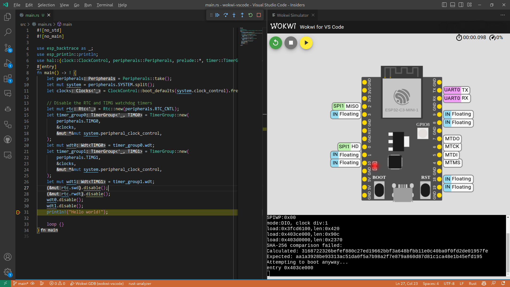

Introduction
The goal of this book is to provide a comprehensive guide on using the Rust Programming Language with Espressif devices.
Rust support for these devices is still a work in progress, and progress is being made rapidly. Because of this, parts of this documentation may be out of date or change dramatically between readings.
For tools and libraries relating to Rust on ESP, please see the esp-rs organization on GitHub. This organization is managed by employees of Espressif as well as members of the community.
Feel free to join the esp-rs community on Matrix for all technical questions and issues! The community is open to everyone.
Who This Book Is For
This book is intended for people with some experience in Rust and also assumes rudimentary knowledge of embedded development and electronics. For those without prior experience, we recommend first reading the Assumptions and Prerequisites and Resources sections to get up to speed.
Assumptions and Prerequisites
- You are comfortable using the Rust programming language and have written and run applications in a desktop environment.
- You should be familiar with the idioms of the 2021 edition, as this book targets Rust 2021.
- You are comfortable developing embedded systems in another language such as C or C++, and are familiar with concepts such as:
- Cross-compilation
- Common digital interfaces like
UART,SPI,I2C, etc. - Memory-mapped peripherals
- Interrupts
Resources
If you are unfamiliar or less experienced with anything mentioned above, or if you would just like more information about a particular topic mentioned in this book. You may find these resources helpful.
| Resource | Description |
|---|---|
| The Rust Programming Language | If you aren't familiar with Rust we recommend reading this book first. |
| The Embedded Rust Book | Here you can find several other resources provided by Rust's Embedded Working Group. |
| The Embedonomicon | The nitty-gritty details when doing embedded programming in Rust. |
| Embedded Rust (std) on Espressif | Getting started guide on using std for Espressif SoCs |
| Embedded Rust (no_std) on Espressif | Getting started guide on using no_std for Espressif SoCs |
Translations
This book has been translated by generous volunteers. If you would like your translation listed here, please open a PR to add it.
- 简体中文 (repository)
- 한국어 (repository)
How to Use This Book
This book assumes that you are reading it front-to-back. Content covered in later chapters may not make much sense without the context from previous chapters.
Contributing to This Book
The work on this book is coordinated in this repository.
If you have trouble following the instructions in this book or find that some section of the book isn't clear enough, then that's a bug. Please report it in the issue tracker of this book.
Pull requests fixing typos and adding new content are welcome!
Re-Using This Material
This book is distributed under the following licenses:
- The code samples and freestanding Cargo projects contained within this book are licensed under the terms of both the MIT License and the Apache License v2.0.
- The written prose, pictures, and diagrams contained within this book are licensed under the terms of the Creative Commons CC-BY-SA v4.0 license.
In summary, to use our text or images in your work, you need to:
- Give the appropriate credit (i.e. mention this book on your slide, and provide a link to the relevant page)
- Provide a link to the CC-BY-SA v4.0 license
- Indicate if you have changed the material in any way, and make any changes to our material available under the same license
Please do let us know if you find this book useful!
Overview of Development Approaches
There are the following approaches to using Rust on Espressif chips:
- Using the
stdlibrary, a.k.a. Standard library. - Using the
corelibrary (no_std), a.k.a. bare metal development.
Both approaches have their advantages and disadvantages, so you should make a decision based on your project's needs. This chapter contains an overview of the two approaches:
See also the comparison of the different runtimes in The Embedded Rust Book.
The esp-rs organization on GitHub is home to several repositories related to running Rust on Espressif chips. Most of the required crates have their source code hosted here.
Repository Naming Convention
In the esp-rs organization, we use the following wording:
- Repositories starting with
esp-are focused onno_stdapproach. For example,esp-halno_stdworks on top of bare metal, soesp-is an Espressif chip
- Repositories starting with
esp-idf-are focused onstdapproach. For example,esp-idf-halstd, apart from bare metal, also needs an additional layer, which isesp-idf-
Support for Espressif Products
⚠️ Notes:
- ✅ - The feature is implemented or supported
- ⏳ - The feature is under development
- ❌ - The feature isn't supported
- ⚠️ - There is some support but the feature is discontinued
| Chip | std | no_std |
|---|---|---|
| ESP32 | ✅ | ✅ |
| ESP32-C2 | ✅ | ✅ |
| ESP32-C3 | ✅ | ✅ |
| ESP32-C6 | ✅ | ✅ |
| ESP32-S2 | ✅ | ✅ |
| ESP32-S3 | ✅ | ✅ |
| ESP32-H2 | ✅ | ✅ |
| ESP8266 | ❌ | ⚠️ |
⚠️ Note: Rust support for the ESP8266 series is limited and isn't being officially supported by Espressif.
The products supported in certain circumstances will be called supported Espressif products throughout the book.
Using the Standard Library (std)
Espressif provides a C-based development framework called ESP-IDF. It has, or will have, support for all Espressif chips starting with the ESP32, note that this framework doesn't support the ESP8266.
ESP-IDF, in turn, provides a newlib environment with enough functionality to build the Rust standard library (std) on top of it. This is the approach that is being taken to enable std support on Epressif devices.
Current Support
The Espressif products supported for Rust std development are the ones supported by the ESP-IDF framework. For details on different versions of ESP-IDF and support of Espressif chips, see this table.
When using std, you have access to a lot of features that exist in ESP-IDF, including threads, mutexes and other synchronization primitives, collections, random number generation, sockets, etc.
Relevant esp-rs Crates
| Repository | Description |
|---|---|
embedded-svc | Abstraction traits for embedded services (WiFi, Network, Httpd, Logging, etc.) |
esp-idf-svc | An implementation of embedded-svc using esp-idf drivers. |
esp-idf-hal | An implementation of the embedded-hal and other traits using the esp-idf framework. |
esp-idf-sys | Rust bindings to the esp-idf development framework. Gives raw (unsafe) access to drivers, Wi-Fi and more. |
The aforementioned crates have interdependencies, and this relationship can be seen below.
graph TD;
esp-idf-hal --> esp-idf-sys & embedded-svc
esp-idf-svc --> esp-idf-sys & esp-idf-hal & embedded-svc
When You Might Want to Use the Standard Library (std)
- Rich functionality: If your embedded system requires lots of functionality like support for networking protocols, file I/O, or complex data structures, you will likely want to use hosted-environment approach because
stdlibraries provide a wide range of functionality that can be used to build complex applications. - Portability: The
stdcrate provides a standardized set of APIs that can be used across different platforms and architectures, making it easier to write code that is portable and reusable. - Rapid development: The
stdcrate provides a rich set of functionality that can be used to build applications quickly and efficiently, without worrying, too much, about low-level details.
Using the Core Library (no_std)
Using no_std may be more familiar to embedded Rust developers. It doesn't use std (the Rust standard library) but instead uses a subset, the core library. The Embedded Rust Book has a great section on this.
It is important to note that no_std uses the Rust core library. As this library is part of the Rust standard library, a no_std crate can compile in std environment. However, the opposite isn't true: an std crate can't compile in no_std environment. This information is worth remembering when deciding which library to choose.
Current Support
The table below covers the current support for no_std at this moment for different Espressif products.
| HAL | Wi-Fi/BLE/ESP-NOW | Backtrace | Storage | |
|---|---|---|---|---|
| ESP32 | ✅ | ✅ | ✅ | ✅ |
| ESP32-C2 | ✅ | ✅ | ✅ | ✅ |
| ESP32-C3 | ✅ | ✅ | ✅ | ✅ |
| ESP32-C6 | ✅ | ✅ | ✅ | ✅ |
| ESP32-H2 | ✅ | ✅ | ✅ | ✅ |
| ESP32-S2 | ✅ | ✅ | ✅ | ✅ |
| ESP32-S3 | ✅ | ✅ | ✅ | ✅ |
⚠️ Note:
- ✅ in Wi-Fi/BLE/ESP-NOW means that the target supports, at least, one of the listed technologies. For details, see Current support table of the esp-wifi repository.
- ESP8266 HAL is in maintenance mode and no further development will be done for this chip.
Relevant esp-rs Crates
| Repository | Description |
|---|---|
esp-hal | Hardware abstraction layer |
esp-pacs | Peripheral access crates |
esp-wifi | Wi-Fi, BLE and ESP-NOW support |
esp-alloc | Simple heap allocator |
esp-println | print!, println! |
esp-backtrace | Exception and panic handlers |
esp-storage | Embedded-storage traits to access unencrypted flash memory |
When You Might Want to Use the Core Library (no_std)
- Small memory footprint: If your embedded system has limited resources and needs to have a small memory footprint, you will likely want to use bare-metal because
stdfeatures add a significant amount of final binary size and compilation time. - Direct hardware control: If your embedded system requires more direct control over the hardware, such as low-level device drivers or access to specialized hardware features you will likely want to use bare-metal because
stdadds abstractions that can make it harder to interact directly with the hardware. - Real-time constraints or time-critical applications: If your embedded system requires real-time performance or low-latency response times because
stdcan introduce unpredictable delays and overhead that can affect real-time performance. - Custom requirements: bare-metal allows more customization and fine-grained control over the behavior of an application, which can be useful in specialized or non-standard environments.
Setting Up a Development Environment
At the moment, Espressif SoCs are based on two different architectures: RISC-V and Xtensa. Both architectures support std and no_std approaches.
To set up the development environment, do the following:
- Install Rust
- Install requirements based on your target(s)
Regardless of the target architecture, for std development also don't forget to install std Development Requirements.
Please note that you can host the development environment in a container.
Rust Installation
Make sure you have Rust installed. If not, see the instructions on the rustup website.
🚨 Warning: When using Unix based systems, installing Rust via a system package manager (e.g.
brew,apt,dnf, etc.) can result in various issues and incompatibilities, so it's best to use rustup instead.
When using Windows, make sure you have installed one of the ABIs listed below. For more details, see the Windows chapter in The rustup book.
- MSVC: Recommended ABI, included in the list of
rustupdefault requirements. Use it for interoperability with the software produced by Visual Studio. - GNU: ABI used by the GCC toolchain. Install it yourself for interoperability with the software built with the MinGW/MSYS2 toolchain.
See also alternative installation methods.
RISC-V Targets Only
To build Rust applications for the Espressif chips based on RISC-V architecture, do the following:
-
Install the proper toolchain with the
rust-srccomponent:- For
no_std(bare-metal) applications, you can use bothstableornightly:
rustup toolchain install stable --component rust-srcor
rustup toolchain install nightly --component rust-src- For
stdapplications, you need to usenightly:
rustup toolchain install nightly --component rust-srcThe above command downloads the rust source code.
rust-srccontains things like the std-lib, core-lib and build-config files.
Downloading therust-srcis important because of two reasons :- Determinism - You get the chance to inspect the internals of the core and std library. If you are building software that needs to be determinate, you may need to inspect the libraries that you are using.
- Building custom targets - The
rustcuses therust-srcto create the components of a new custom-target. If you are targeting a triple-target that is not yet supported by rust, it becomes essential to download therust-src.
For more info on custom targets, read this Chapter from the Embedonomicon.
- For
-
Set the target:
-
For
no_std(bare-metal) applications, run:rustup target add riscv32imc-unknown-none-elf # For ESP32-C2 and ESP32-C3 rustup target add riscv32imac-unknown-none-elf # For ESP32-C6 and ESP32-H2This target is currently Tier 2. Note the different flavors of
riscv32target in Rust covering differentRISC-Vextensions. -
For
stdapplications:Since this target is currently Tier 3, it doesn't have pre-built objects distributed through
rustupand, unlike theno_stdtarget, nothing needs to be installed. Refer to the *-esp-idf section of the rustc book for the correct target for your device.riscv32imc-esp-espidffor SoCs which don't support atomics, like ESP32-C2 and ESP32-C3riscv32imac-esp-espidffor SoCs which support atomics, like ESP32-C6, ESP32-H2, and ESP32-P4
-
-
To build
stdprojects, you also need to install:LLVMcompiler infrastructure- Other
stddevelopment requirements - In your project's file
.cargo/config.toml, add the unstable Cargo feature-Z build-std. Our template projects that are discussed later in this book already include this.
Now you should be able to build and run projects on Espressif's RISC-V chips.
RISC-V and Xtensa Targets
espup is a tool that simplifies installing and maintaining the components required to develop Rust applications for the Xtensa and RISC-V architectures.
1. Install espup
To install espup, run:
cargo install espup
You can also directly download pre-compiled release binaries or use cargo-binstall.
2. Install Necessary Toolchains
Install all the necessary tools to develop Rust applications for all supported Espressif targets by running:
espup install
⚠️ Note:
stdapplications require installing additional software covered instdDevelopment Requirements
3. Set Up the Environment Variables
espup will create an export file that contains some environment variables required to build projects.
On Windows (%USERPROFILE%\export-esp.ps1)
- There is no need to execute the file for Windows users. It is only created to show the modified environment variables.
On Unix-based systems ($HOME/export-esp.sh). There are different ways of sourcing the file:
-
Source this file in every terminal:
- Source the export file:
. $HOME/export-esp.sh
This approach requires running the command in every new shell.
- Source the export file:
-
Create an alias for executing the
export-esp.sh:- Copy and paste the following command to your shell’s profile (
.profile,.bashrc,.zprofile, etc.):alias get_esprs='. $HOME/export-esp.sh' - Refresh the configuration by restarting the terminal session or by running
source [path to profile], for example,source ~/.bashrc.
This approach requires running the alias in every new shell.
- Copy and paste the following command to your shell’s profile (
-
Add the environment variables to your shell profile directly:
- Add the content of
$HOME/export-esp.shto your shell’s profile:cat $HOME/export-esp.sh >> [path to profile], for example,cat $HOME/export-esp.sh >> ~/.bashrc. - Refresh the configuration by restarting the terminal session or by running
source [path to profile], for example,source ~/.bashrc.
This approach doesn't require any sourcing. The
export-esp.shscript will be sourced automatically in every shell. - Add the content of
What espup Installs
To enable support for Espressif targets, espup installs the following tools:
- Espressif Rust fork with support for Espressif targets
nightlytoolchain with support forRISC-VtargetsLLVMfork with support forXtensatargets- GCC toolchain that links the final binary
The forked compiler can coexist with the standard Rust compiler, allowing both to be installed on your system. The forked compiler is invoked when using any of the available overriding methods.
⚠️ Note: We are making efforts to upstream our forks
- Changes in
LLVMfork. Already in progress, see the status in this tracking issue.- Rust compiler forks. If
LLVMchanges are accepted, we will proceed with the Rust compiler changes.
If you run into an error, please, check the Troubleshooting chapter.
Other Installation Methods for Xtensa Targets
- Using
rust-buildinstallation scripts. This was the recommended way in the past, but now the installation scripts are feature frozen, and all new features will only be included inespup. See the repository README for instructions. - Building the Rust compiler with
Xtensasupport from source. This process is computationally expensive and can take one or more hours to complete depending on your system. It isn't recommended unless there is a major reason to go for this approach. Here is the repository to build it from source:esp-rs/rustrepository.
std Development Requirements
Regardless of the target architecture, make sure you have the following required tools installed to build std applications:
- ESP-IDF Prerequisites:
- Windows:
pythonandgit - Linux: See Linux ESP-IDF prerequisites.
- macOS: See macOS ESP-IDF prerequisites.
- Windows:
ldproxybinary crate: A tool that forwards linker arguments to the actual linker that is also given as an argument toldproxy. Install it by running:cargo install ldproxy
⚠️ Note: The
stdruntime uses ESP-IDF (Espressif IoT Development Framework) as hosted environment but, users don't need to install it. ESP-IDF is automatically downloaded and installed byesp-idf-sys, a crate that allstdprojects need to use, when building astdapplication.
Using Containers
Instead of installing directly on your local system, you can host the development environment inside a container. Espressif provides the idf-rust image that supports both RISC-V and Xtensa target architectures and enables both std and no_std development.
You can find numerous tags for linux/arm64, and linux/amd64 platforms.
For each Rust release, we generate the tag with the following naming convention:
<chip>_<rust-toolchain-version>- For example,
esp32_1.64.0.0contains the ecosystem for developingstd, andno_stdapplications forESP32with the1.64.0.0XtensaRust toolchain.
- For example,
There are special cases:
<chip>can beallwhich indicates compatibility with all Espressif targets<rust-toolchain-version>can belatestwhich indicates the latest release of theXtensaRust toolchain
Depending on your operating system, you can choose any container runtime, such as Docker, Podman, or Lima.
Writing Your Own Application
With the appropriate Rust compiler and toolchain installed, you're now ready to create an application.
You can write an application in the following ways:
- (Strongly recommended) Generate from a template: Gives you a configured project, saves time, and prevents possible errors.
- Start from scratch using Cargo: Requires more expertise since you need to configure several parts of the project.
⚠️ Note: Starting a project with Cargo doesn't provide any advantage, only mentioned here since it's the usual way of generating a project in Rust.
This chapter won't cover the instructions on how to create a project from scratch with cargo, it will only focus on generating a project from a template project.
The tools used in this chapter will be covered in more detail in the next chapter Tooling, feel free to refer to it when required.
Generating Projects from Templates
We currently maintain two template repositories:
esp-template-no_stdtemplate.esp-idf-template-stdtemplate.
Both templates are based on cargo-generate, a tool that allows you to create a new project based on some existing template. In our case, esp-idf-template or esp-template can be used to generate an application with all the required configurations and dependencies.
-
Install
cargo generate:cargo install cargo-generate -
Generate a project based on one of the templates:
esp-template:
See Understandingcargo generate esp-rs/esp-templateesp-templatefor more details on the template project.esp-idf-template:
See Understandingcargo generate esp-rs/esp-idf-template cargoesp-idf-templatefor more details on the template project.
When the
cargo generatesubcommand is invoked, you will be prompted to answer several questions regarding the target of your application. Upon completion of this process, you will have a buildable project with all the correct configurations. -
Build/Run the generated project:
- Use
cargo buildto compile the project using the appropriate toolchain and target. - Use
cargo runto compile the project, flash it, and open a serial monitor with our target device.
- Use
Using Dev Containers in the Templates
Both template repositories have a prompt for Dev Containers support, see details in Dev Containers section of the template README.
Dev Containers use the idf-rust container image, which was explained in the Using Container section of the Setting up a Development Environment chapter. This image provides an environment ready to develop Rust applications for Espressif chips with no installation required. Dev Containers also have integration with Wokwi simulator, to simulate the project, and allow flashing from the container using web-flash.
Understanding esp-template
Now that we know how to generate a no_std project, let's inspect what the generated
project contains, try to understand every part of it, and run it.
Inspecting the Generated Project
When creating a project from esp-template with the following answers:
- Which MCU to target? ·
esp32c3 - Configure advanced template options? ·
false
For this explanation, we will use the default values, if you want further modifications, see the additional prompts when not using default values.
It should generate a file structure like this:
├── .cargo
│ └── config.toml
├── src
│ └── main.rs
├── .gitignore
├── Cargo.toml
├── LICENSE-APACHE
├── LICENSE-MIT
└── rust-toolchain.toml
Before going further, let's see what these files are for.
.cargo/config.toml- The Cargo configuration
- This defines a few options to correctly build the project
- Contains
runner = "espflash flash --monitor"- this means you can just usecargo runto flash and monitor your code
src/main.rs- The main source file of the newly created project
- For details, see the Understanding
main.rssection below
.gitignore- Tells
gitwhich folders and files to ignore
- Tells
Cargo.toml- The usual Cargo manifest declares some meta-data and dependencies of the project
LICENSE-APACHE,LICENSE_MIT- Those are the most common licenses used in the Rust ecosystem
- If you want to use a different license, you can delete these files and change the license in
Cargo.toml
rust-toolchain.toml- Defines which Rust toolchain to use
- The toolchain will be
nightlyorespdepending on your target
- The toolchain will be
- Defines which Rust toolchain to use
Understanding main.rs
1 #![no_std]
2 #![no_main]#![no_std]- This tells the Rust compiler that this code doesn't use
libstd
- This tells the Rust compiler that this code doesn't use
#![no_main]- The
no_mainattribute says that this program won't use the standard main interface, which is usually used when a full operating system is available. Instead of the standard main, we'll use the entry attribute from theesp-riscv-rtcrate to define a custom entry point. In this program, we have named the entry pointmain, but any other name could have been used. The entry point function must be a diverging function. I.e. it has the signaturefn foo() -> !; this type indicates that the function never returns – which means that the program never terminates.
- The
4 use esp_backtrace as _;
5 use esp_println::println;
6 use esp_hal::{clock::ClockControl, peripherals::Peripherals, prelude::*, timer::TimerGroup, Rtc};use esp_backtrace as _;- Since we are in a bare-metal environment, we need a panic handler that runs if a panic occurs in code
- There are a few different crates you can use (e.g
panic-halt) butesp-backtraceprovides an implementation that prints the address of a backtrace - together withespflashthese addresses can get decoded into source code locations
use esp_println::println;- Provides
println!implementation
- Provides
use esp_hal::{...}- We need to bring in some types we are going to use
8 #[entry]
9 fn main() -> ! {
10 let peripherals = Peripherals::take();
11 let system = peripherals.SYSTEM.split();
12 let clocks = ClockControl::max(system.clock_control).freeze();
13
14 println!("Hello world!");
15
16 loop {}
17 }Inside the main function we can find:
let peripherals = Peripherals::take()- HAL drivers usually take ownership of peripherals accessed via the PAC
- Here we take all the peripherals from the PAC to pass them to the HAL drivers later
let mut system = peripherals.SYSTEM.split();- Sometimes a peripheral (here the System peripheral) is coarse-grained and doesn't exactly fit the HAL drivers - so here we split the System peripheral into smaller pieces which get passed to the drivers
let clocks = ClockControl::max(system.clock_control).freeze();- Here we configure the system clocks - in this case, boost to the maxiumum for the chip
- We freeze the clocks, which means we can't change them later
- Some drivers need a reference to the clocks to know how to calculate rates and durations
println!("Hello world!");- Prints "Hello world!"
loop {}- Since our function is supposed to never return, we just "do nothing" in a loop
Running the Code
Building and running the code is as easy as
cargo run
This builds the code according to the configuration and executes espflash to flash the code to the board.
Since our runner configuration also passes the --monitor argument to espflash, we can see what the code is printing.
Make sure that you have espflash installed, otherwise this step will fail. To install espflash:
cargo install espflash
You should see something similar to this:
[2023-04-17T14:17:08Z INFO ] Serial port: '/dev/ttyACM0'
[2023-04-17T14:17:08Z INFO ] Connecting...
[2023-04-17T14:17:09Z INFO ] Using flash stub
[2023-04-17T14:17:09Z WARN ] Setting baud rate higher than 115,200 can cause issues
Chip type: esp32c3 (revision v0.3)
Crystal frequency: 40MHz
Flash size: 4MB
Features: WiFi, BLE
MAC address: 60:55:f9:c0:39:7c
App/part. size: 203,920/4,128,768 bytes, 4.94%
[00:00:00] [========================================] 13/13 0x0
[00:00:00] [========================================] 1/1 0x8000
[00:00:01] [========================================] 64/64 0x10000
[2023-04-17T14:17:11Z INFO ] Flashing has completed!
Commands:
CTRL+R Reset chip
CTRL+C Exit
...
Hello world!
What you see here are messages from the first and second stage bootloader, and then, our "Hello world" message!
And that is exactly what the code is doing.
You can reboot with CTRL+R or exit with CTRL+C.
If you encounter any issues while building the project, please, see the Troubleshooting chapter.
Understanding esp-idf-template
Now that we know how to generate a std project, let's inspect what the generated project contains and try to understand every part of it.
Inspecting the Generated Project
When creating a project from esp-idf-template with the following answers:
- Which MCU to target? ·
esp32c3 - Configure advanced template options? ·
false
For this explanation, we will use the default values, if you want further modifications, see the additional prompts when not using default values.
It should generate a file structure like this:
├── .cargo
│ └── config.toml
├── src
│ └── main.rs
├── .gitignore
├── build.rs
├── Cargo.toml
├── rust-toolchain.toml
└── sdkconfig.defaults
Before going further, let's see what these files are for.
.cargo/config.toml- The Cargo configuration
- Contains our target
- Contains
runner = "espflash flash --monitor"- this means you can just usecargo runto flash and monitor your code - Contains the linker to use, in our case,
ldproxy - Contains the unstable
build-stdCargo feature enabled - Contains the
ESP-IDF-VERSIONenvironment variable that tellsesp-idf-syswhich ESP-IDF version the project will use
src/main.rs- The main source file of the newly created project
- For details, see the Understanding
main.rssection below
.gitignore- Tells
gitwhich folders and files to ignore
- Tells
build.rs- Propagates linker arguments for
ldproxy
- Propagates linker arguments for
Cargo.toml- The usual Cargo manifest declaring some meta-data and dependencies of the project
rust-toolchain.toml- Defines which Rust toolchain to use
- The toolchain will be
nightlyorespdepending on your target
- The toolchain will be
- Defines which Rust toolchain to use
sdkconfig.defaults- Contains the overridden values from the ESP-IDF defaults
Understanding main.rs
1 use esp_idf_sys as _; // If using the `binstart` feature of `esp-idf-sys`, always keep this module imported
2
3 fn main() {
4 // It is necessary to call this function once. Otherwise some patches to the runtime
5 // implemented by esp-idf-sys might not link properly. See https://github.com/esp-rs/esp-idf-template/issues/71
6 esp_idf_sys::link_patches();
7 println!("Hello, world!");
8 }The first line is an import that defines the ESP-IDF entry point when the root crate is a binary crate that defines a main function.
Then, we have a usual main function with a few lines on it:
- A call to
esp_idf_sys::link_patchesfunction that makes sure that a few patches to the ESP-IDF which are implemented in Rust are linked to the final executable - We print on our console the famous "Hello, world!"
Running the Code
Building and running the code is as easy as
cargo run
This builds the code according to the configuration and executes espflash to flash the code to the board.
Since our runner configuration also passes the --monitor argument to espflash, we can see what the code is printing.
Make sure that you have espflash installed, otherwise this step will fail. To install espflash:
cargo install espflash
You should see something similar to this:
[2023-04-18T08:05:09Z INFO ] Connecting...
[2023-04-18T08:05:10Z INFO ] Using flash stub
[2023-04-18T08:05:10Z WARN ] Setting baud rate higher than 115,200 can cause issues
Chip type: esp32c3 (revision v0.3)
Crystal frequency: 40MHz
Flash size: 4MB
Features: WiFi, BLE
MAC address: 60:55:f9:c0:39:7c
App/part. size: 478,416/4,128,768 bytes, 11.59%
[00:00:00] [========================================] 13/13 0x0
[00:00:00] [========================================] 1/1 0x8000
[00:00:04] [========================================] 227/227 0x10000
[2023-04-18T08:05:15Z INFO ] Flashing has completed!
Commands:
CTRL+R Reset chip
CTRL+C Exit
...
I (344) cpu_start: Starting scheduler.
Hello, world!
As you can see, there are messages from the first and second-stage bootloader and then, our "Hello, world!" is printed.
You can reboot with CTRL+R or exit with CTRL+C.
If you encounter any issues while building the project, please, see the Troubleshooting chapter.
Writing no_std Applications
If you want to learn how to develop no_std application, see the following training materials:
- The book Embedded Rust (
no_std) on Espressif - The repository
no_std-training
The training is based on ESP32-C3-DevKit-RUST-1. You can use any other Espressif development board but code changes and configuration changes might be needed.
The training contains:
- Introductory level examples:
⚠️ Note: There are several examples covering the use of specific peripherals under the
examplesfolderesp-hal. For running instructions and device compatibility for a given example, refer to theexamplesREADME.
Writing std Applications
If you want to learn how to develop std application, see the following training materials developed alongside Ferrous Systems:
- The book Embedded Rust on Espressif
- The repository
std-training
The training is based on ESP32-C3-DevKit-RUST-1. You can use any other Espressif development board, but code changes and configuration changes might be needed.
The training is split into two parts:
- Introductory level examples:
- Advanced level examples:
- Low-level GPIO
- Interrupts in General
- I2C Driver
- I2C Sensor Reading
- GPIO/Button Interrupts
- Driving an RGB LED
⚠️ Note: There are several examples covering the use of specific peripherals under the examples' folder of
esp-idf-hal. I.e.esp-idf-hal/examples.
Tooling
Now that we have our required dependencies installed, and we know how to generate a template project, we will cover, in more detail, some tools. These tools will make developing Rust applications for Espressif chips a lot easier.
In this chapter, we will present espflash/cargo-espflash, suggest Visual Studio Code as IDE and, dig into the
currently available simulation and debugging methods.
Visual Studio Code
One of the more common development environments is Microsoft's Visual Studio Code text editor along with the Rust Analyzer, also known as RA, extension.
Visual Studio Code is an open-source and cross-platform graphical text editor with a rich ecosystem of extensions. The Rust Analyzer extension provides an implementation of the Language Server Protocol for Rust and additionally includes features like autocompletion, go-to definition, and more.
Visual Studio Code can be installed via the most popular package managers, and installers are available on the official website. The Rust Analyzer extension can be installed in Visual Studio Code via the built-in extension manager.
Alongside Rust Analyzer there are other extensions that might be helpful:
- Even Better TOML for editing TOML-based configuration files
- crates to help manage Rust dependencies
Tips and Tricks
Using Rust Analyzer with no_std
If you are developing for a target that doesn't have std support, Rust Analyzer can behave strangely, often reporting various errors. This can be resolved by creating a .vscode/settings.json file in your project and populating it with the following:
{
"rust-analyzer.check.allTargets": false
}
Cargo Hints When Using Custom Toolchains
If you are using a custom toolchain, as you would with Xtensa targets, you can provide some hints to cargo via the rust-toolchain.toml file to improve the user experience:
[toolchain]
channel = "esp"
components = ["rustfmt", "rustc-dev"]
targets = ["xtensa-esp32-none-elf"]
Other IDEs
We chose to cover VS Code because it has good support for Rust and is popular among developers. There are also other IDEs available that have comparable Rust support, such as CLion and vim, but these are outside of this book's scope.
espflash
espflash is a serial flasher utility, based on esptool.py, for Espressif SoCs and modules.
The espflash repository contains two crates, cargo-espflash and espflash. For more information on these crates, see the respective sections below.
⚠️ Note: The
espflashandcargo-espflashcommands shown below, assume that version2.0or greater is used.
cargo-espflash
Provides a subcommand for cargo that handles cross-compilation and flashing.
To install cargo-espflash, ensure that you have the necessary dependencies installed, and then execute the following command:
cargo install cargo-espflash
This command must be run within a Cargo project, ie. a directory containing a Cargo.toml file. For example, to build an example named 'blinky', flash the resulting binary to a device, and then subsequently start a serial monitor:
cargo espflash flash --example=blinky --monitor
For more information, please see the cargo-espflash README.
espflash
Provides a standalone command-line application that flashes an ELF file to a device.
To install espflash, ensure that you have the necessary dependencies installed, and then execute the following command:
cargo install espflash
Assuming you have built an ELF binary by other means already, espflash can be used to download it to your device and monitor the serial port. For example, if you have built the getting-started/blinky example from ESP-IDF using idf.py, you might run something like:
espflash flash build/blinky --monitor
For more information, please see the espflash README.
espflash can be used as a Cargo runner by adding the following to your project's .cargo/config.toml file:
[target.'cfg(any(target_arch = "riscv32", target_arch = "xtensa"))']
runner = "espflash flash --monitor"
With this configuration, you can flash and monitor your application using cargo run.
Debugging
Debugging Rust applications is also possible using different tools that will be covered in this chapter.
Refer to the table below to see which chip is supported in every debugging method:
| probe-rs | OpenOCD | |
|---|---|---|
| ESP32 | ✅ | ✅ |
| ESP32-C2 | ✅ | ✅ |
| ESP32-C3 | ✅ | ✅ |
| ESP32-C6 | ✅ | ✅ |
| ESP32-H2 | ✅ | ✅ |
| ESP32-S2 | ✅ | ✅ |
| ESP32-S3 | ✅ | ✅ |
⚠️ Note: Xtensa support is still a work in progress, see probe-rs#2001 for more information.
USB-JTAG-SERIAL Peripheral
Some of our recent products contain the USB-JTAG-SERIAL peripheral that allows for debugging without any external hardware debugger. More info on configuring the interface can be found in the official documentation for the chips that support this peripheral:
-
- The availability of built-in JTAG interface depends on the ESP32-C3 revision:
- Revisions older than 0.3 don't have a built-in JTAG interface.
- Revisions 0.3 (and newer) do have a built-in JTAG interface, and you don't have to connect an external device to be able to debug.
- The ESP32-C3 Devkit C doesn't expose the JTAG interface over USB by default, see the ESP32-C3 debugging docs to configure the board for debugging or consider using the esp32c3-rust-board instead.
To find your ESP32-C3 revision, run:
cargo espflash board-info # or espflash board-info - The availability of built-in JTAG interface depends on the ESP32-C3 revision:
probe-rs
The probe-rs project is a set of tools to interact with embedded MCU's using various debug probes. It is similar to OpenOCD, pyOCD, Segger tools, etc. There is support for Xtensa & RISC-V architectures along with a collection of tools, including but not limited to:
- Debugger
- GDB support.
- CLI for interactive debugging.
- VS Code extension.
- Real Time Transfer (RTT)
- Similar to
app_tracecomponent of IDF.
- Similar to
- Flashing algorithms
Follow the installation and setup instructions at the probe-rs website.
Espressif products containing the USB-JTAG-SERIAL peripheral can use probe-rs without any external hardware.
Flashing with probe-rs
probe-rs can be used to flash applications to your target since it supports the ESP-IDF image format.
- Example command for flashing an ESP32-C3:
probe-rs run --chip esp32c3
The flashing command can be set as a custom Cargo runner by adding the following to your project's .cargo/config.toml file:
[target.'cfg(any(target_arch = "riscv32", target_arch = "xtensa"))']
runner = "probe-rs run --chip esp32c3"
With this configuration, you can flash and monitor your application using cargo run.
VS Code Extension
There is a probe-rs extension in VS Code, see probe-rs VS Code documentation for details on how to install, configure and use it.
Example launch.json
{
"version": "0.2.0",
"configurations": [
{
"type": "probe-rs-debug",
"request": "launch",
"name": "Launch",
"cwd": "${workspaceFolder}",
"chip": "esp32c3", //!MODIFY
// probe field only needed if multiple probes connected. <Serial> is the MAC address of your esp in case of usb-jtag
"probe": "VID:PID:<Serial>", //!MODIFY (or remove) | optional field
"flashingConfig": {
"flashingEnabled": true,
"haltAfterReset": true,
"formatOptions": {
"binaryFormat": "idf"
}
},
"coreConfigs": [
{
"coreIndex": 0,
"programBinary": "target/riscv32imc-unknown-none-elf/debug/${workspaceFolderBasename}", //!MODIFY
// svdFiles describe the hardware register names off the esp peripherals, such as the LEDC peripheral.
// They can be downloaded seperatly @ https://github.com/espressif/svd/tree/main/svd
"svdFile": "${workspaceFolder}/esp32c3.svd" //!MODIFY (or remove) | optional field
}
]
},
{
"type": "probe-rs-debug",
"request": "attach",
"name": "Attach",
"cwd": "${workspaceFolder}",
"chip": "esp32c3", //!MODIFY
"probe": "VID:PID:<Serial>", //!MODIFY (or remove) | optional field
"coreConfigs": [
{
"coreIndex": 0,
"programBinary": "target/riscv32imc-unknown-none-elf/debug/${workspaceFolderBasename}", //!MODIFY
"svdFile": "${workspaceFolder}/esp32c3.svd" //!MODIFY (or remove) | optional field
}
]
}
]
}
The Launch configuration will flash the device and start debugging process while Attach will start the debugging in the already running application of the device. See VS Code documentation on differences between launch and attach for more details.
cargo-flash and cargo-embed
probe-rs comes along with these two tools:
cargo-flash: A flash tool that downloads your binary to the target and runs it.cargo-embed: Superset ofcargo-flashthat also allows opening an RTT terminal or a GDB server. A configuration file can used to define the behavior.
GDB Integration
probe-rs includes a GDB stub to integrate into your usual workflow with common tools. The probe-rs gdb command runs a GDB server, by default in port, 1337.
GDB with all the Espressif products supported can be obtained in espressif/binutils-gdb
OpenOCD
Similar to probe-rs, OpenOCD doesn't have support for the Xtensa architecture. However, Espressif does maintain a fork of OpenOCD under espressif/openocd-esp32 which has support for Espressif's chips.
Instructions on how to install openocd-esp32 for your platform can be found in the Espressif documentation.
GDB with all the Espressif products supported can be obtained in espressif/binutils-gdb.
Once installed, it's as simple as running openocd with the correct arguments. For chips with the built-in USB-JTAG-SERIAL peripheral, there is normally a config file that will work out of the box, for example on the ESP32-C3:
openocd -f board/esp32c3-builtin.cfg
For other configurations, it may require specifying the chip and the interface, for example, ESP32 with a J-Link:
openocd -f interface/jlink.cfg -f target/esp32.cfg
VS Code Extension
OpenOCD can be used in VS Code via the cortex-debug extension to debug Espressif products.
Configuration
- If required, connect the external JTAG adapter.
- See Configure Other JTAG Interfaces section of ESP-IDF Programming Guide. Eg: Section for ESP32
⚠️ Note: On Windows,
USB Serial Converter A 0403 6010 00driver should be WinUSB.
- Set up VSCode
- Install Cortex-Debug extension for VS Code.
- Create the
.vscode/launch.jsonfile in the project tree you want to debug. - Update
executable,svdFile,serverpathpaths, andtoolchainPrefixfields.
{
// Use IntelliSense to learn about possible attributes.
// Hover to view descriptions of existing attributes.
// For more information, visit: https://go.microsoft.com/fwlink/?linkid=830387
"version": "0.2.0",
"configurations": [
{
// more info at: https://github.com/Marus/cortex-debug/blob/master/package.json
"name": "Attach",
"type": "cortex-debug",
"request": "attach", // launch will fail when attempting to download the app into the target
"cwd": "${workspaceRoot}",
"executable": "target/xtensa-esp32-none-elf/debug/.....", //!MODIFY
"servertype": "openocd",
"interface": "jtag",
"toolchainPrefix": "xtensa-esp32-elf", //!MODIFY
"openOCDPreConfigLaunchCommands": ["set ESP_RTOS none"],
"serverpath": "C:/Espressif/tools/openocd-esp32/v0.11.0-esp32-20220411/openocd-esp32/bin/openocd.exe", //!MODIFY
"gdbPath": "C:/Espressif/tools/riscv32-esp-elf-gdb/riscv32-esp-elf-gdb/bin/riscv32-esp-elf-gdb.exe", //!MODIFY
"configFiles": ["board/esp32-wrover-kit-3.3v.cfg"], //!MODIFY
"overrideAttachCommands": [
"set remote hardware-watchpoint-limit 2",
"mon halt",
"flushregs"
],
"overrideRestartCommands": ["mon reset halt", "flushregs", "c"]
}
]
}
Debugging with Multiple Cores
Sometimes you may need to debug each core individually in GDB or with VSCode. In this case, change set ESP_RTOS none to set ESP_RTOS hwthread. This will make each core appear as a hardware thread in GDB. This is not currently documented in Espressif official documentation but in OpenOCD docs: https://openocd.org/doc/html/GDB-and-OpenOCD.html
Simulating
Simulating projects can be handy. It allows users to test projects using CI, try projects without having hardware available, and many other scenarios.
At the moment, there are a few ways of simulating Rust projects on Espressif chips. Every way has some limitations, but it's quickly evolving and getting better every day.
In this chapter, we will discuss currently available simulation tools.
Refer to the table below to see which chip is supported in every simulating method:
| Wokwi | QEMU | |
|---|---|---|
| ESP32 | ✅ | ✅ |
| ESP32-C2 | ❌ | ❌ |
| ESP32-C3 | ✅ | ❌ |
| ESP32-C6 | ✅ | ❌ |
| ESP32-H2 | ✅ | ❌ |
| ESP32-S2 | ✅ | ❌ |
| ESP32-S3 | ✅ | ❌ |
Wokwi
Wokwi is an online simulator that supports simulating Rust projects (both std and no_std) in Espressif Chips.
See wokwi.com/rust for a list of examples and a way to start new projects.
Wokwi offers Wi-Fi simulation, Virtual Logic Analyzer, and GDB debugging among many other features, see Wokwi documentation for more details. For ESP chips, there is a table of simulation features that are currently supported.
Using Wokwi for VS Code extension
Wokwi offers a VS Code extension that allows you to simulate a project directly in the code editor by only adding a few files. For more information, see Wokwi documentation. You can also debug your code using the VS Code debugger, see Debugging your code.
When using any of the templates and not using the default values, there is a prompt (Configure project to support Wokwi simulation with Wokwi VS Code extension?) that generates the required files to use Wokwi VS Code extension.

Using wokwi-server
wokwi-server is a CLI tool for launching a Wokwi simulation of your project. I.e., it allows you
to build a project on your machine, or in a container, and simulate the resulting binary.
wokwi-server also allows simulating your resulting binary on other Wokwi projects, with more hardware parts other than the chip itself. See the corresponding section of the wokwi-server README for detailed instructions.
Custom Chips
Wokwi allows generating custom chips that let you program the behavior of a component not supported in Wokwi. For more details, see the official Wokwi documentation.
Custom chips can also be written in Rust! See Wokwi Custom Chip API for more information. For example, custom inverter chip in Rust.
QEMU
Espressif maintains a fork of QEMU in espressif/QEMU with the necessary patches to make it work on Espressif chips. See the ESP-specific instructions for running QEMU for instructions on how to build QEMU and emulate projects with it.
Once you have built QEMU, you should have the qemu-system-xtensa file.
Running Your Project Using QEMU
⚠️ Note: Only ESP32 is currently supported, so make sure you are compiling for
xtensa-esp32-espidftarget.
For running our project in QEMU, we need a firmware/image with bootloader and partition table merged in it.
We can use cargo-espflash to generate it:
cargo espflash save-image --chip esp32 --merge <OUTFILE> --release
If you prefer to use espflash, you can achieve the same result by building the project first and then generating image:
cargo build --release
espflash save-image --chip esp32 --merge target/xtensa-esp32-espidf/release/<NAME> <OUTFILE>
Now, run the image in QEMU:
/path/to/qemu-system-xtensa -nographic -machine esp32 -drive file=<OUTFILE>,if=mtd,format=raw -m 4M
Troubleshooting
This chapter lists certain questions and common problems we have encountered over time, along with their solutions. This page collects common issues independent of the chosen ESP ecosystem. If you can't find your issue listed here, feel free to open an issue in the appropriate repository or ask on our Matrix room.
Using the Wrong Rust Toolchain
$ cargo build
error: failed to run `rustc` to learn about target-specific information
Caused by:
process didn't exit successfully: `rustc - --crate-name ___ --print=file-names --target xtensa-esp32-espidf --crate-type bin --crate-type rlib --crate-type dylib --crate-type cdylib --crate-type staticlib --crate-type proc-macro --print=sysroot --print=cfg` (exit status: 1)
--- stderr
error: Error loading target specification: Could not find specification for target "xtensa-esp32-espidf". Run `rustc --print target-list` for a list of built-in targets
If you are encountering the previous error or a similar one, you are probably not using the proper Rust toolchain. Remember that for Xtensa targets, you need to use Espressif Rust fork toolchain, there are several ways to do it:
- A toolchain override shorthand used on the command-line:
cargo +esp. - Set
RUSTUP_TOOLCHAINenvironment variable toesp. - Set a directory override:
rustup override set esp - Add a
rust-toolchain.tomlfile to you project:[toolchain] channel = "esp" - Set
espas default toolchain.
For more information on toolchain overriding, see the Overrides chapter of The rustup book.
Windows
Long Path Names
When using Windows, you may encounter issues building a new project if using long path names.
Moreover - and if you are trying to build a std application - the build will fail with a hard error if your project path
is longer than ~ 10 characters.
To workaround the problem, you need to shorten your project name, and move it to the drive root, as in e.g. C:\myproj.
Note also that while using the Windows subst utility (as in e.g. subst r: <pathToYourProject>) might look like an easy
solution for using short paths during build while still keeping your project location intact,
it simply does not work, as the short, substituted paths are expanded to their actual (long) locations by the Windows APIs.
Another alternative is to install Windows Subsystem for Linux (WSL), move your project(s) inside the native Linux file partition, build inside WSL and only flash the compiled MCU ELF file from outside of WSL.
Missing ABI
Compiling cc v1.0.69
error: linker `link.exe` not found
|
= note: The system cannot find the file specified. (os error 2)
note: the msvc targets depend on the msvc linker but `link.exe` was not found
note: please ensure that VS 2013, VS 2015, VS 2017 or VS 2019 was installed with the Visual C++ option
error: could not compile `compiler_builtins` due to previous error
warning: build failed, waiting for other jobs to finish...
error: build failed
The reason for this error is that we are missing the MSVC C++, hence we aren't meeting the Compile-time Requirements. Please, install Visual Studio 2013 (or later) or the Visual C++ Build Tools 2019. For Visual Studio, make sure to check the "C++ tools" and "Windows 10 SDK" options. If using GNU ABI, install MinGW/MSYS2 toolchain.
esp-idf-sys based projects
Wrong Xtal Frequency
Using a 26 Mhz crystal instead of a 40 MHz requires modifying the sdkconfig. Add the following configuration option to your sdkconfig file:
CONFIG_XTAL_FREQ_26=y
After making this adjustment, execute cargo clean to ensure that the changes are properly incorporated into your project. See sdkconfig section.
When using an esp-idf-sys based project, you should also prefer using cargo-espflash instead of espflash. cargo-espflash integrates with your
project and it will flash the bootloader and partition table that is built for your project instead of the default one, see the corresponding cargo-espflash readme section.
If you want to use espflash, you can specify an appropriate bootloader and partition table using --bootloader and --partition-table. You can find the bootloader in target/<your MCU's target folder>/<debug or release depending on your build>/bootloader.bin and partition table in target/<your MCU's target folder>/<debug or release depending on your build>/partition-table.bin
Environment Variable LIBCLANG_PATH Not Set
thread 'main' panicked at 'Unable to find libclang: "couldn't find any valid shared libraries matching: ['libclang.so', 'libclang-*.so', 'libclang.so.*', 'libclang-*.so.*'], set the `LIBCLANG_PATH` environment variable to a path where one of these files can be found (invalid: [])"', /home/esp/.cargo/registry/src/github.com-1ecc6299db9ec823/bindgen-0.60.1/src/lib.rs:2172:31
We need libclang for bindgen to generate the Rust bindings to the ESP-IDF C headers.
Make sure you have sourced the export file generated by espup, see Set up the environment variables.
Missing ldproxy
error: linker `ldproxy` not found
|
= note: No such file or directory (os error 2)
If you are trying to build a std application ldproxy must be installed. See std Development Requirements
cargo install ldproxy
sdkconfig.defaults File is Updated but it Doesn't Appear to Have Had Any Effect
You must clean your project and rebuild for changes in the sdkconfig.defaults to take effect:
cargo clean
cargo build
The Documentation for the Crates Mentioned on This Page is out of Date or Missing
Due to the resource limits imposed by docs.rs, internet access is blocked while building documentation. For this reason, we are unable to build the documentation for esp-idf-sys or any crate depending on it.
Instead, we are building the documentation and hosting it ourselves on GitHub Pages:
A Stack Overflow in Task main has Been Detected
If the second-stage bootloader reports this error, you likely need to increase the stack size for the main task. This can be accomplished by adding the following to the sdkconfig.defaults file:
CONFIG_ESP_MAIN_TASK_STACK_SIZE=7000
In this example, we are allocating 7 kB for the main task's stack.
How to Disable Watchdog Timer(s)?
Add to your sdkconfig.defaults file:
CONFIG_INT_WDT=n
CONFIG_ESP_TASK_WDT=n
Recall that you must clean your project before rebuilding when modifying these configuration files.